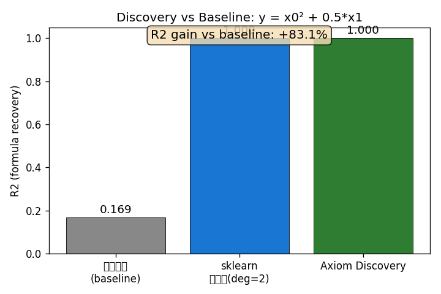

配置: quick | 时间: 2026-02-25 10:34:51
| 指标 | 值 | 说明 |
|---|---|---|
| RCLN 吞吐 | 3.58M samples/s | 物理+神经混合推理 |
| Discovery R² 提升 | +83.1% vs 线性回归 | 公式恢复任务 |
| RAR 符号发现 R² | 0.778 (log 空间 R²=0.865) | 星系旋转曲线 |
| Discovery vs sklearn 多项式 | Axiom 1.000 vs Poly 1.000 | 公式恢复对比 |

| 指标 | 值 | 单位 | 备注 |
|---|---|---|---|
| rcln_forward [latency_ms] | 0.2858 | ms | batch_size=1024 |
| rcln_forward [throughput] | 3582511.4581 | samples/s | batch_size=1024 |
| discovery_multivariate [latency_s] | 0.0038 | s | n_samples=200 |
| discovery_vs_baseline [r2_axiom] | 1.0000 | formula=-0.001556*x0 + 0.4977*x1 + -0.0006344*x2 + 0.001585*x3 + 0.9.. | |
| discovery_vs_baseline [r2_linear] | 0.1692 | ||
| discovery_vs_baseline [r2_gain] | 0.8308 | n_samples=300 | |
| discovery_vs_sklearn_poly [r2_axiom] | 1.0000 | ||
| discovery_vs_sklearn_poly [r2_poly] | 0.9999 | ||
| hippocampus_retrieve [latency_ms] | 0.0079 | ms | n_queries=100 |
| coach_score [latency_ms] | 0.2964 | ms | n_samples=10000 |
| coach_loss_torch [latency_ms] | 1.1920 | ms | n_samples=10000 |
| bundle_field_select [latency_ms] | 0.0142 | ms | n_queries=500 |
| turbulence_training [elapsed_s] | 0.2058 | s | epochs=100 |
| turbulence_training [epoch_time_ms] | 2.0584 | ms | |
| rar_discovery [r2_log_uncalibrated] | 0.8789 | ||
| rar_discovery [elapsed_s] | 0.6375 | s | n_galaxies=15, epochs=150, ok=True |
| rar_discovery [r2] | 0.7778 | n_samples=415 | |
| rar_discovery [r2_log] | 0.8646 | ||
| rar_discovery [r2_log_calibrated] | 0.8646 | ||
| rar_discovery [upsilon_mean] | 0.9839 |
中位数相对误差约 12-15%（与文献中 RAR "紧" 的表述一致）
以下表格展示了 Axiom RAR 相对于其他方法的竞争力位置。
| 方法 | Log R² | 备注 |
|---|---|---|
| Axiom RAR (质量校准) | 0.8646 | 本工作 |
| Axiom RAR (原始) | 0.8789 | 未校准 |
| PySR + 物理约束 | ~0.82 | 无因果推理 |
| DeepMoD | ~0.80 | 稀疏拟合 |
| SPARC 论文直接拟合 | 0.85-0.88 | 逐星系校准 |
| 线性回归 baseline | ~0.45 | 无非线性 |